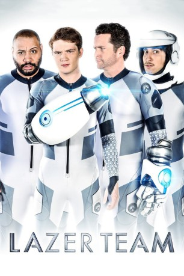

#9388 Lazer Team
 gesehen am 30.08.2018
gesehen am 30.08.2018
 
 IMDB-Wertung: 5.6 / 10
IMDB-Wertung: 5.6 / 10  Metascore: 0
Metascore: 0 
In den 1960er Jahren stieß ein Programm der US-Regierung zur Suche nach außerirdischem Leben auf ein einmaliges Signal aus den Tiefen des Alls, das vor der Öffentlichkeit jedoch lange Zeit geheim gehalten wurde. Seit der von freundlich gesinnten Aliens ausgesandten Botschaft sind vor allem zwei Dinge klar: Wir sind nicht alleine im Universum und die Galaxie ist ein gefährlicher Ort. Jahrzehnte später ist die Menschheit daher auf eine Bedrodhung von außerhalb der Erde vorbereitet. Ein Krieger wurde jahrelang trainiert, um es mit allen Alien-Feinden aufzunehmen. Dazu soll er einen hochentwickelten Anzug tragen, der von den freundlichen Außerirdischen entwickelt wurde – doch fällt dieser schließlich vier wenig kampftauglichen Typen in die Hände...
Jahr: 2015
Dauer: 99 Minuten
FSK: 12
Land: USA Studio: AmplifyTonspuren: DTS - ,
Untertitel:
Auflösung: 1080p (1920x800) Größe: 4976 MB
Genre: Action, Sci-Fi, Komödie
Regisseur: Matt Hullum
Drehbuch: Burnie Burns, Burnie Burns, Chris Demarais, Josh Flanagan, Matt Hullum
Soundtrack: Jeff Williams
Darsteller:
- Burnie Burns als Hagan
- Gavin Free als Woody
- Michael Jones als Zach
 Colton Dunn als Herman
Colton Dunn als Herman- Alexandria DeBerry als Mindy
 Alan Ritchson als Adam
Alan Ritchson als Adam- Steve Shearer als Colonel Emory
- Johnny Walter als Murdoch
- Jeremy St. James als Bean
- Patrick Arnez als Cronie #1
- Bobby Hernandez als Cronie #2
- Irina Voronina als Beautiful Scientist
- Gus Sorola als Disheveled Scientist
- Brandon Farmahini als Hospital Guard #2
- Michaela J. Burton als Jules
 Bill Wise als Football Announcer #1
Bill Wise als Football Announcer #1- Joel Heyman als Reporter
- Ed Robertson als BNL News Anchor
- Yomary Cruz als Entertainment News Anchor
 Justine Ezarik als Vlogger
Justine Ezarik als Vlogger- Aaron Spivey-Sorrells als Stadium Cop #1
- Liz Beckham als Desk Nurse
- Kira Pozehl als VR Tech #1
- Mike Dell als Commander
- Arthur Marroquin als High School Hagan
- Dalton E. Gray als Teenage Adam
 Gregory Kelly als Worg
Gregory Kelly als Worg Neil deGrasse Tyson als Neil deGrasse Tyson
Neil deGrasse Tyson als Neil deGrasse Tyson- Lee Eddy als Radio Dispatcher
- Gray G. Haddock als
- Matt Hullum als
- Teddy Burns als Lazer Team Fan
 Deborah Abbott als Spectator (uncredited)
Deborah Abbott als Spectator (uncredited) David Blackwell als Store Clerk (uncredited)
David Blackwell als Store Clerk (uncredited)- Brandi Jamille Brown als News Reporter (uncredited)
- Thomas Burke als Government Assistant (uncredited)
- Mike Carreon als News 4 Cameraman (uncredited)
- John Chriss als Jasper Beth (uncredited)
 Rebecca Chulew als Spectator (uncredited)
Rebecca Chulew als Spectator (uncredited) Don Daro als Military Brass (uncredited)
Don Daro als Military Brass (uncredited)- Barbara Dunkelman als Ruby Lakes Cheerleader (uncredited)
- Kara Eberle als Ruby Lakes Cheerleader (uncredited)
- Brian Elder als Fan (uncredited)
- Josh Henslee als Soldier (uncredited)
 R.C. Keene als Spectator (uncredited)
R.C. Keene als Spectator (uncredited)- Chris J. Knight als Tailgater (uncredited)
- Paulina Manseau als Spectator (uncredited)
- Heather Materne als Spectator / Milford Fan (uncredited)
- Robert T. McDorman als Military Police (uncredited)
- Juan Gabriel Moreno als Soldier (uncredited)
Datei: X:\2-Dilogie(G-M)\Lazer Team\Lazer Team (2015, FSK12, 1920x800).mkv seit 30.08.2018
Festplatte: HD Collection-2(A-Z)-3(A-M)
 Alle Filme aus Gruppe '2-Dilogie(G-M)\Lazer Team'
Alle Filme aus Gruppe '2-Dilogie(G-M)\Lazer Team'